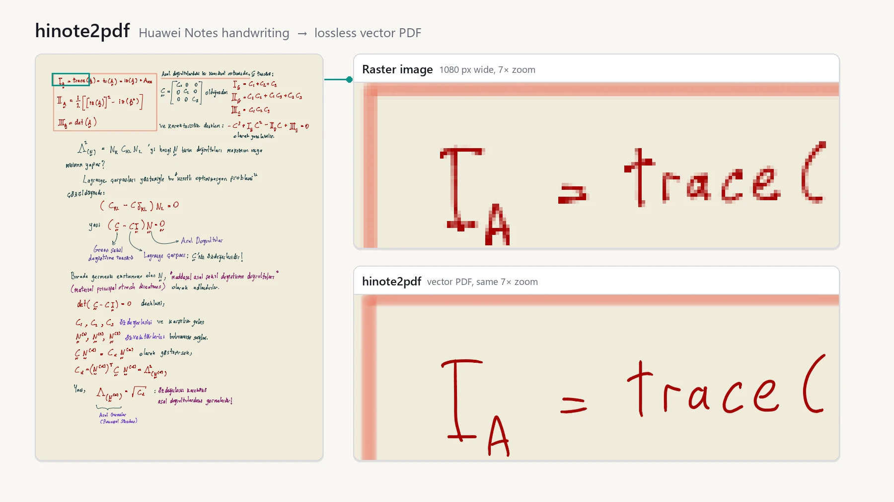

hinote2pdf: Huawei Notes handwriting to lossless vector PDF
An open-source converter that turns Huawei Notes .hinote files into PDFs whose ink is pure vector geometry: sharp at any zoom, faithful to pen pressure, colour and translucency, with imported PDF pages kept selectable.

Overview
Huawei Notes on MatePad tablets and Huawei phones keeps handwriting as strokes in its own .hinote files. Taking those notes anywhere else usually means pictures of the pages, which blur when you zoom in and print poorly. hinote2pdf converts .hinote files into PDFs whose ink is vector geometry, so a page is exact at 100 % and at 6400 %.
Each stroke is rebuilt from its recorded pen samples: a smooth curve through every point, a width that follows pen pressure and the tip of the pen that drew it. Translucent pens are built up stamp by stamp inside exact radial soft masks, so overlaps darken as they do on the tablet; highlighters are painted once per stroke and stay see-through; eraser cuts fall exactly where they were made.
Notes written on imported PDFs keep that PDF as it is, embedded under the ink, so slides and papers stay selectable and searchable. The converter also checks its own work: --verify renders every page and scores it against the preview stored in the note. It runs entirely offline and never modifies a note.
What I built
- A small Python package (pypdf only) with a command-line interface, a Windows drag-and-drop launcher and a file-picker mode for whole folders of notes.
- A PDF writer that emits strokes as round-capped constant-width runs within about 2 µm of the exact outline on A4, optional editable ink annotations, and toggleable layers for handwriting and highlighter.
- Exact soft-edged translucency: per-stamp radial shadings multiplied inside luminosity soft masks, so the accumulated alpha 1 − ∏(1 − a·T(r)) is evaluated per pixel at any zoom.
- A self-check against the note's own page previews (89–93 % on a real 15-page note with
--weight 1.3), unit tests and a sample note to try without a tablet.
Sample output
Run it
$ pip install git+https://github.com/kahyaoglu20/hinote2pdf $ hinote2pdf "my note.hinote" $ hinote2pdf notes/ -o pdfs/ --annotations $ hinote2pdf "my note.hinote" --verify --weight 1.3